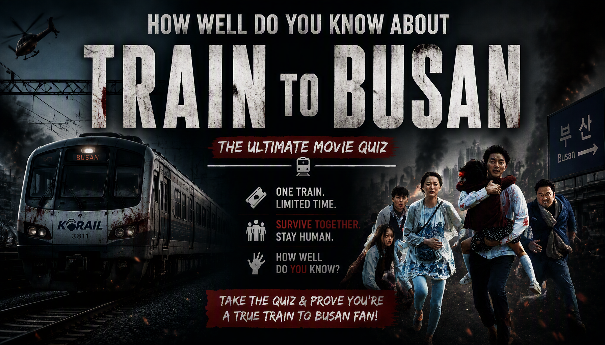

Think you can survive the zombie outbreak? Test your knowledge of the characters, infected, survivors, train journey and desperate fight to reach Busan in the movie Train to Busan.


About the Train to Busan Movie Quiz
The Train to Busan Movie Quiz is a 20-question trivia challenge for fans of the 2016 South Korean zombie thriller Train to Busan. The film follows Seok-woo and his daughter Su-an as they board a train from Seoul to Busan just as a devastating zombie outbreak begins spreading across the country.
The questions cover the movie's characters, infected, survivors, train journey, important locations, zombie behavior and major events during the fight to reach Busan.
Some questions test major plot details, while others focus on smaller facts that are easier to forget. If you remember the passengers' desperate struggle for survival aboard the train, this quiz gives you a chance to test your memory.
How the Train to Busan Movie Quiz Works
The quiz contains 20 questions. Every question has four possible choices, but only one answer is correct. Read each question carefully and select the answer you believe is correct before continuing.
Each correct answer gives you 1 point, while an incorrect answer gives you 0 points. With 20 questions in total, your number of correct answers is converted into a final percentage out of 100%.
Your final result represents your knowledge of the movie based on your performance. A high score means you successfully remembered many of the characters, events, locations and survival details featured in Train to Busan.
Quiz Navigation
Starting the quiz
Select START QUIZ on the opening screen to begin. The first question will appear with four possible answers.
Selecting an answer
Read the question and all four choices before making your decision. Select the answer you believe is correct and continue through the quiz.
Next and Back buttons
Use Next to move forward through the questions. The Back button allows you to return to an earlier question and review your selection. Your current question number and progress are displayed as you move through the quiz.
Finishing the quiz
Continue until you have answered all 20 questions. When you reach the end, submit your answers to finish the quiz and view your final percentage and Train to Busan Knowledge result.
Try Again and Challenge Friends
After viewing your result, select TRY AGAIN to replay the quiz and attempt a higher score. You can also use SHARE MY RESULT or CHALLENGE YOUR FRIENDS to share your result and challenge other fans.
Train to Busan Movie Quiz FAQ
How many questions are in the quiz?
There are 20 questions in total, and every question has four possible choices.
What is the maximum score?
The maximum result is 100%. Each correct answer contributes 1 point before the score is converted into a percentage.
What topics are covered?
The quiz focuses on Train to Busan, including its characters, zombie outbreak, survivors, train journey, locations, zombie behavior and major story details.
Is this quiz about the characters?
The quiz includes questions about important characters, but it also covers the zombie outbreak, survival strategy, train journey and other major details from the movie.
Which movie does this quiz cover?
This quiz focuses on the 2016 South Korean zombie thriller Train to Busan, directed by Yeon Sang-ho.
What does my score mean?
Your percentage shows how many of the 20 movie-related questions you answered correctly. A higher score indicates stronger knowledge of Train to Busan.
Can I take the quiz again?
Yes. Select TRY AGAIN after completing the quiz to start another attempt and try to improve your score.
Can I challenge my friends?
Yes. Select CHALLENGE YOUR FRIENDS after completing the quiz to share the challenge and see whether your friends can beat your score.
Spoiler Warning
This quiz contains spoilers for Train to Busan. Questions may reveal major characters, the zombie outbreak, important deaths, survival strategies, locations and other important details from the movie.
If you have not watched Train to Busan, consider watching the movie before taking the quiz to avoid having important story details spoiled.